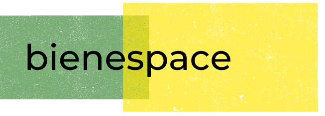

Choose less but better!
ABOUT
Design + build of tiny houses. The concept is simple and simple is the concept. More people are choosing less for more.
You can turn the limit on m.sq into an advantage. Indeed, we want to show people it’s possible to live a healthier and happier life in a much smaller space.
Live in a space that makes your life more connected to nature, more flexible and more free.
An alt way of living: in this environmental and economic reality to some extent we have to re-learn how to live.
With the help of design and technology we can create elegant solutions that have the potential to be great for us too.
Home isn't a place, it's a feeling!
PRODUCT
Model 1
Key advantages
- spacious: loft, bathroom, shower, living
- strong natural woody feel
- minimalist contents + layout
- lot of natural light thanks to large window area
- clear separation of day from night space
- multiple separate sitting areas
Comprehensive service
- bespoke design based on individual needs
- turnkey product
- expert assistance on legal requirements + planning
- guarantee included
VALUES
Optimisation
We want to make the best use of our spaces and optimise the dynamic functionality they provide.
We also want to make the most of materials and natural resources to minimise waste and consumption. We recognise that beyond the aesthetic a built-space is a 'machine for living'.
Efficiency has a beauty of its own.
Nature
We recognise that we depend on nature and value the vitality it gives us. We want to improve our connection to nature and respect it
through sustainable choices and minimising impact.
Freedom
We want our houses to enable freedom to live the life we value and desire, with less financial, geographical and other constraints.
WHY GO TINY
Mediterranean
Earthy tones and textures, simple luxury and sensuality, and flow between inside and outside.
Japanese
Value of clean, uncluttered space and connection to nature.
Scandi
Use of wood and other natural materials, capturing of light and
sense of comfort.
Minimalism
Simplicity and cutting through to the essential, antidote to the complexity of our world.
PHOTO GALLERY